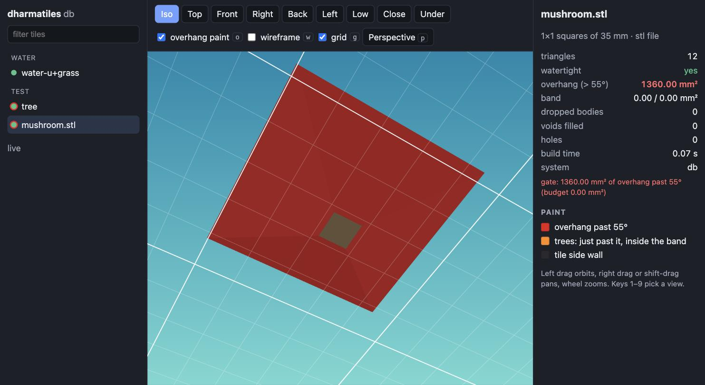
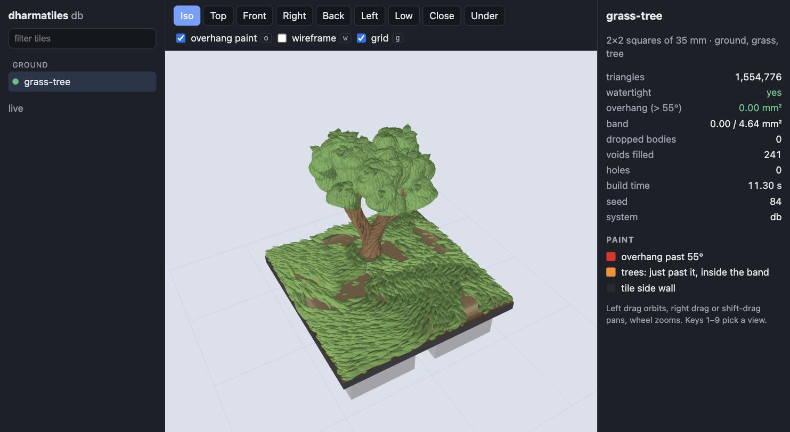
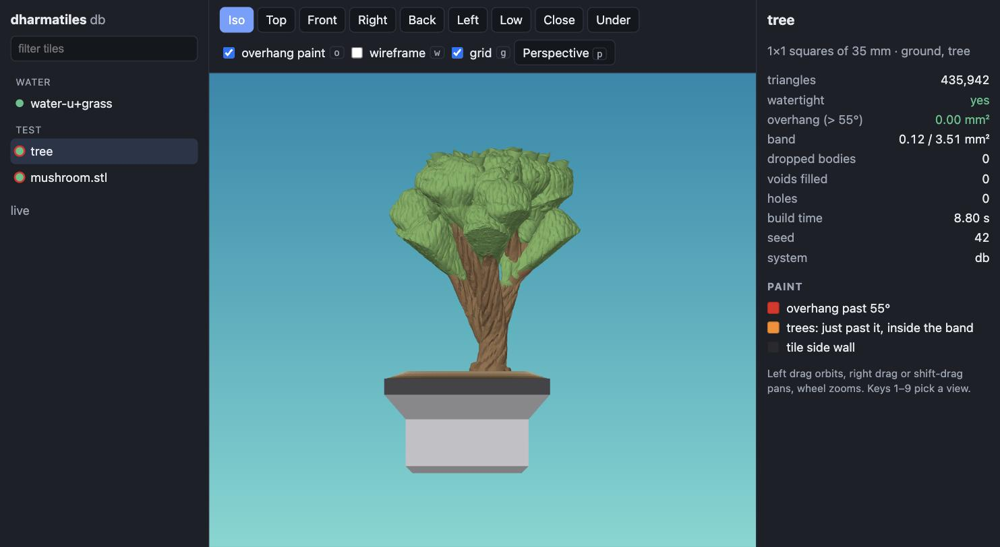
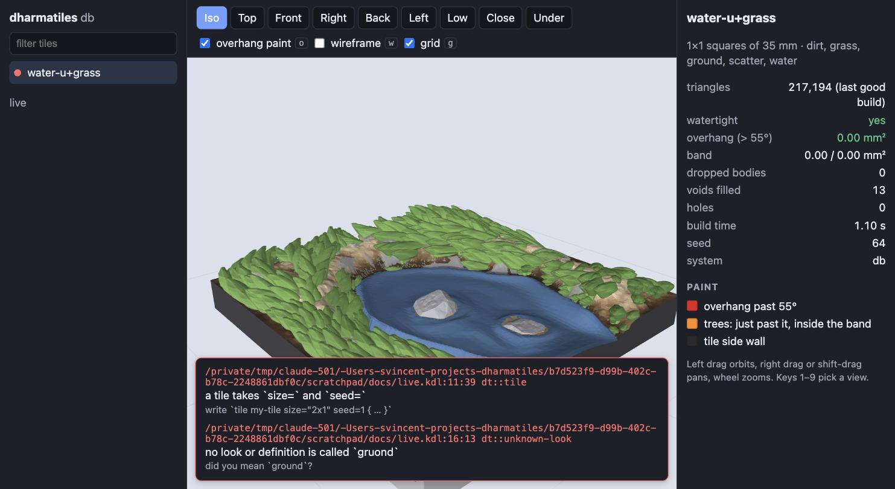

Run it
dharmatiles preview my-tile.kdl --open # one document, opens the browser
dharmatiles preview a.kdl b.kdl lib:tiles/ground/1x1-grass.kdl # several; pick one in the list
dharmatiles preview # the whole bundled library, built when you click a tile
dharmatiles preview my-tile.kdl --system ol --port 9000
dharmatiles preview slicer-export.stl # any binary STL, through the same gateIt serves http://127.0.0.1:7878/ (the first free port from 7878, or --port) and only on the loopback address, never on 0.0.0.0. A request whose Host header is not 127.0.0.1, localhost or [::1] is refused. Ctrl-C stops it. The viewer is inside the program, so it works offline, including after brew install.
What it shows

- Painted like the PNG renders. Each triangle has the colour
build --pngwould give it: material colours, dirtlab's earth ramp, grey pebbles, the dark tile side wall, blue water, green grass. The shading is the same too (two lights placed relative to the camera, the same gamma). The colours are worked out in Rust and sent per vertex; the browser does no painting of its own. - Red is the gate's own overhang. A face is red when the printability gate (layer reach past the printer's 55° limit) says so, not when a shader guesses from the angle. The viewer and
buildcannot disagree. On trees the band just past the limit is orange. - Views (keys 1–9): Iso, Top, Front, Right, Back, Left, Low (to inspect undersides), Close and Under, the contact sheet's views plus the elevations. Orbit with the left button, pan with the right button or shift, zoom with the wheel.
- Perspective or orthographic (p, or the button beside the toggles). Switching keeps the view: the same target, direction and apparent size (the orthographic frustum is taken from the perspective camera's distance and field of view, so the tile does not jump). In orthographic mode the wheel zooms the view, not the distance, and the presets work as before. The choice is remembered in the browser across tiles, rebuilds and reloads.
- Toggles: overhang paint (o), wireframe (w) and the ground grid (g), ruled at the square size (35 mm, or 25.4 mm for OpenLOCK).
- Build record beside the view: triangles, watertight, overhang mm², band against its budget, dropped bodies, voids filled, holes, build time, seed, and any gate failure.
- Tile list on the left, with a dot for each tile: grey (not built), amber (building), green (ready), red (failed). A red ring means overhang or band area.


Live updates
Save the document, or any file it uses, and the tile rebuilds. The page shows building… at once, keeps the old mesh and your camera, and swaps the new mesh in place when it is done. If the document has a mistake, the errors appear over the view as file:line:column with the hint, and the last good mesh stays behind them; fix the file and the next save clears them.

The server builds one tile at a time. Documents named on the command line are all built at the start, the first one first; with no document, a library tile is built when you pick it.
How it works
| Route | What |
|---|---|
GET / and assets | the viewer: plain HTML and JS modules, web/preview/, with three.js r170 vendored in web/preview/vendor/ and embedded in the program with include_bytes!. No npm, no bundler. |
GET /api/events | server-sent events: a snapshot of every tile, then one event per change (building, plan pass, ready, failed). |
GET /api/tiles/N/mesh | the mesh as one binary buffer: positions and normals as f32, two sets of per-vertex RGB bytes (with and without the overhang paint). Layout in crates/dharmatiles/src/preview/payload.rs. |
POST /api/tiles/N/build | build a tile that has not been built. |
The files the build read are polled for changes every 150 ms, as watch does. The plan pass (check: the tile's name, size and stack) is sent before geometry, so the grid and the tile's size appear at once. The front end talks to the server only through web/preview/js/host.js; the Tauri app can supply another host and reuse viewer.js and main.js unchanged.
What v1 does not do
- The mesh is sent whole, unindexed: about 90 bytes a triangle, 140 MB for the 1.55-million-triangle 2×2 grass tile. On the loopback it takes under 0.1 s and the tile appears about a second after it is built, but it is not meant for a network.
- The plan pass shows the grid and the stack, not a placeholder of the ground; the mesh comes only when the build ends. Nothing is pushed per stack entry, because
dt-evalbuilds the whole stack in one call and does not yet rebuild single entries. - A change rebuilds the whole tile. No section cuts, measuring or editing.
- One build at a time;
--systemis fixed per run (restart for the other connector). - The library tiles are overhang-free by construction (the gate fixes or refuses them), so red shows on documents that fail the gate and on STL files.
Later
- Section cuts: a movable plane to see inside walls, mortar cores and tree trunks, and the layer a face prints at.
- Measuring: click two points for a distance in mm; click a face for its angle and its material.
- Per-entry updates: rebuild only the stack entries whose inputs changed (
dt-eval), pushing each as it finishes. - Smaller meshes: indexed vertices and quantised positions, or a decimated level for orbiting.
- Compare: two builds side by side or differenced, to see what a change did.
- Editor: the Tauri app reuses this front end beside its line and region editor.
- Choose the connector in the page and show the connector's base alone.